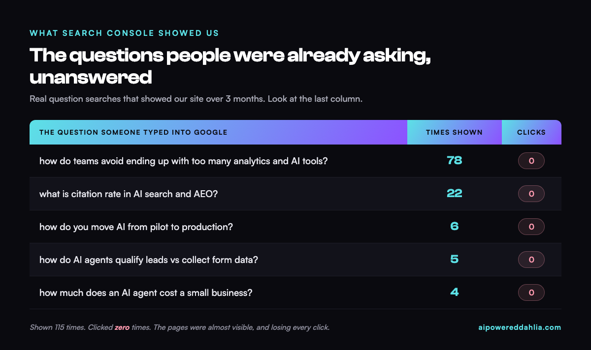

We Ran 3 Free SEO Hacks on Our Own Site: The Process and the Data
The short version: We took three free SEO hacks making the rounds on TikTok and ran them on our own site in one afternoon. The first surfaced the exact questions people search to find us. The second turned those questions into quotable answers. The third pointed Google to the pages that matter. Below is the repeatable process, the real Search Console data, and the one finding worth stealing. No budget, no code you have to understand.
Most SEO advice is either too vague to act on or too technical to trust. So we did the boring thing: ran three simple, free moves on our own site, measured what happened, and wrote down the process so any small team can copy it. Credit where it is due, the three hacks are adapted from @chitchat.marketing on TikTok.
The three hacks, one line each
- Hack 1: Find the exact questions people search to reach your site.
- Hack 2: Answer one of those questions on the page, word for word.
- Hack 3: Link your other pages to the page you want to rank.
All three are free and take one afternoon combined. Here is each one, with the data.
How do you find the exact questions people search to reach a site?
You use Google Search Console, a free tool that records every search that showed your site. The move is to filter that list down to only the questions, which takes about two minutes.
- Search "Google Search Console" and add your site. It is free.
- Open the Performance report. This is every Google search that showed your site.
- Ask ChatGPT or Claude, in plain words, for the code that keeps only the question searches. Copy the short line it gives you. You do not need to understand it.
- In Search Console, click Add Filter, choose Query, pick the "Custom" option, and paste it in.
- What remains is the real list of questions that already show your site.
When we ran it, the list was full of buying-intent questions, and one column told the whole story.

People were asking these exact questions. Google was showing them our pages. Nobody clicked. That gap between "shown" and "clicked" is the entire opportunity, and it points straight at the second hack.
How do you turn those questions into content AI will quote?
The pages were being shown because they were roughly relevant, but they never answered the question directly. The fix took about two minutes per question.
- Take one real question from the list.
- Add it to the right page as a heading, worded exactly how people typed it.
- Answer it in the first two sentences. Direct, specific, no wind-up.
That last rule is the one that matters for AI search. Answer engines lift short, self-contained answers. A response buried three paragraphs down gets skipped; a two-sentence answer directly under a clear question can get quoted. This is the core of answer engine optimization, which we cover in depth in our answer engine optimization guide. We applied it to the pages already being shown: the AI pilot-to-production guide and the AI agents versus lead forms post both got the exact question added as a heading with a two-sentence answer.
How do you make a page Google already shows actually get found?
The third move is the easiest and the most overlooked: internal linking, meaning links from one page of your site to another. It tells Google which page is the important one for a topic.
- Pick the one page you want people to reach.
- Go to Google and type: site:yourwebsite.com "your keyword" (with quotes).
- Google lists every page on your own site that mentions that keyword.
- On those pages, add a link to the target page. Use natural, varied anchor text, never the same phrase twice.
Eight genuinely useful links beat thirty forced ones. If a link would feel awkward to a reader, skip it. Modern search is good at spotting the difference.
We added a handful, each inside a sentence that already existed, each pointing at a page we had just improved. No new writing, about fifteen minutes.
What surprised us
The pages were almost visible, and losing every click. Shown 115 times, clicked zero times. The raw relevance was there; we simply had not finished the job by answering the question cleanly.
The problem we feared was mostly a mirage. We assumed several pages were cannibalizing each other for the same terms. On inspection, most of the overlap was category labels, not competing content. We nearly "fixed" a problem we did not have. Always look before you touch anything.
The sitemap was quietly out of date. On a companion site, the file that tells Google about the pages listed 11 URLs when there were more than 40. Newer posts were effectively invisible through no fault of the writing. A five-minute fix, and a reminder that the boring plumbing decides whether the content ever gets a chance.
Key takeaways
- Open Search Console and read the questions people already ask. It is the cheapest research you will ever run.
- Answer the highest-impression, zero-click question with a clear two-sentence block on the page.
- Add a few natural internal links to the page you most want found.
- Check your sitemap at yoursite.com/sitemap.xml and confirm your real pages are in it.
- Give it a few weeks. Search takes time to recrawl and re-rank.
Here is the only prompt you need for the first hack:
Write me a short filter (a regular expression) that keeps only search queries that are questions, meaning they start with words like how, what, why, where, when, which, who, can, should, or do. I will paste it into Google Search Console's custom query filter. Give me just the line of code and one sentence on where to paste it.
Frequently Asked Questions
How do you find the exact questions people search to reach a site?
Use Google Search Console, which is free. Open the Performance report and filter the Query list to show only questions. The fastest way is to ask an AI assistant to write a small filter that keeps only question-style searches, then paste it into Search Console's custom query filter. What remains is the real list of questions that already show the site.
Why does a page get impressions but zero clicks?
It usually means the page ranks low, often the third page of results, or the answer is being read directly from an AI summary so no click is needed. In our own data, several pages were shown for real questions but earned zero clicks at an average position of 26. The fix is to answer the exact question clearly on the page so it can rise and get quoted.
How does internal linking improve rankings?
An internal link is a link from one page of a site to another. When several pages link to one target page using natural, varied anchor text, it signals to Google that the target is the canonical page for that topic. It is free, takes minutes, and is one of the most overlooked ranking moves for small sites.
Is this something a non-technical team can do?
Yes. All three moves are free, use tools most teams already have (Google Search Console, an AI assistant, and the website itself), and need no code anyone has to understand. You copy what the AI produces, answer real questions in plain language, and add a few internal links. We ran all three in one afternoon.
Sources & Credit
- The three hacks are adapted from @chitchat.marketing on TikTok.
- AirOps. (2026). Answer Engine Optimization: Your Complete Guide for 2026, on question-style headings and citation.
- Figures are from our own Google Search Console data across two sites over three months. Results may vary by site, topic, and starting point.
Want the first-person version?
Dahlia wrote the personal take, "I Tried 3 TikTok SEO Hacks on My Own Website," on her own site.
Read it on dahliaimanbay.com↗